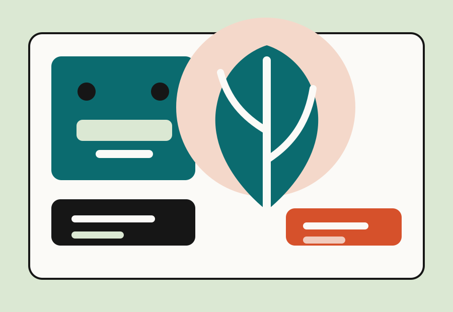
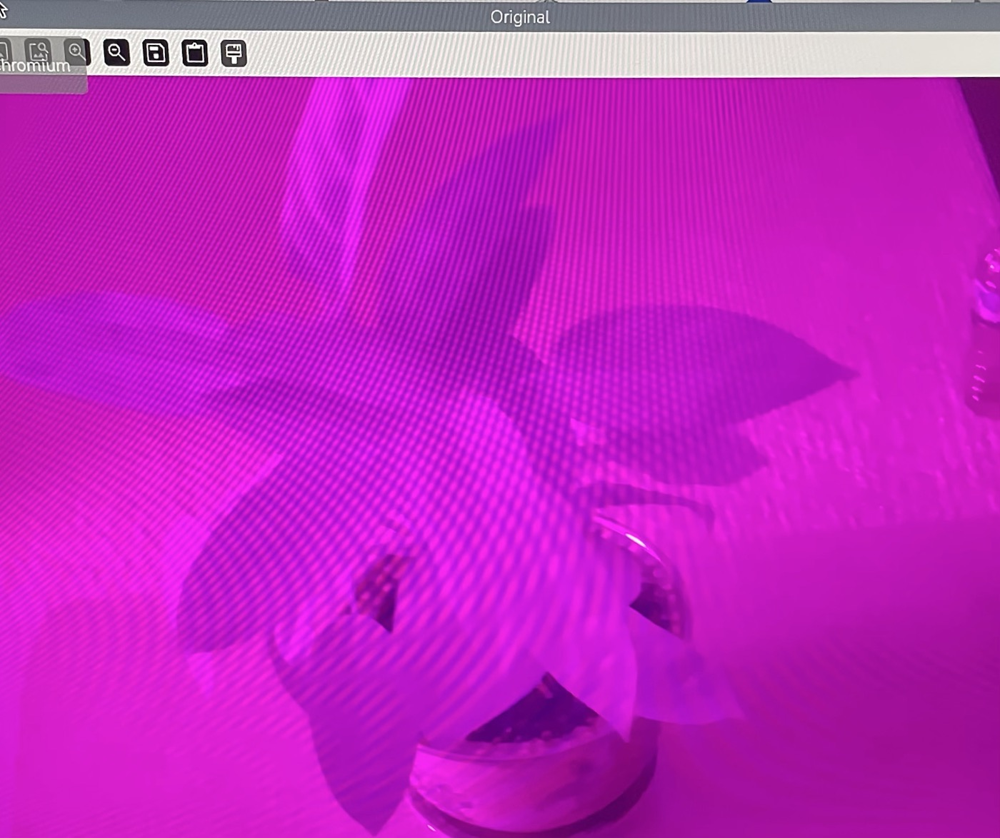
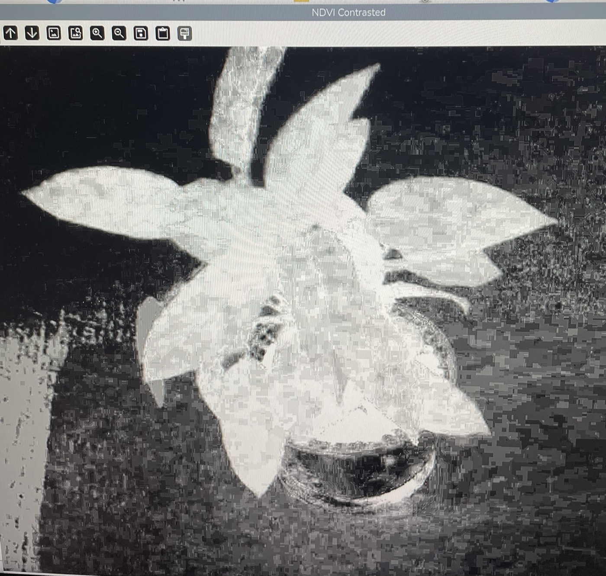

Project Case Study
Capture plant health with NDVI and Raspberry Pi.
This project explored how plant health can be studied with NDVI, a vegetation index that compares near-infrared and red light from plant images. The goal was to understand the hardware, image capture process, and image processing steps behind plant health analysis.

Overview
What this project is about.
NDVI stands for Normalized Difference Vegetation Index. It is used to estimate plant health by comparing how plants reflect red light and near-infrared light. Healthy plants usually absorb more red light for photosynthesis and reflect more near-infrared light.
In this project, I was able to work though the idea of using a Raspberry Pi camera setup to capture a plant image. Then process the image date to create an output that helps show the health and condion of the plant
How It Works
From image capture to plant health.
- Capture plant images using a Raspberry Pi camera setup.
- Use filtering or camera modification to capture useful light information.
- Process the image so red and near-infrared information can be compared.
- Calculate NDVI with the formula: (NIR - Red) / (NIR + Red).
- Use the processed image to observe which plant areas appear healthier or stressed.
Components
Tools and materials.
Documentation
Photos and results


Reflection
Issues I faced and what I learned.
One challenge was understanding how the camera and filters affect what light is actually captured. Another was learning that image quality, lighting, and contrast can change how clear the final result looks. There were a couple of challenges that i had but a lot of them stem from understanding how the camerea and filters work together and how they can affect what light is acaully being caputre. Another thing that learning and unders that the image quaility, lighht eniverment, background items, focus, distance and contrast can all play in a facotrhow clear the final results look.
This project helped me bridge the gap between, hardware, imaging, and programming ideas all togethor. It also showed me that engineering projects require a lot of patience, time, testing, adjusting and documenting each step before the result becomes reliable.